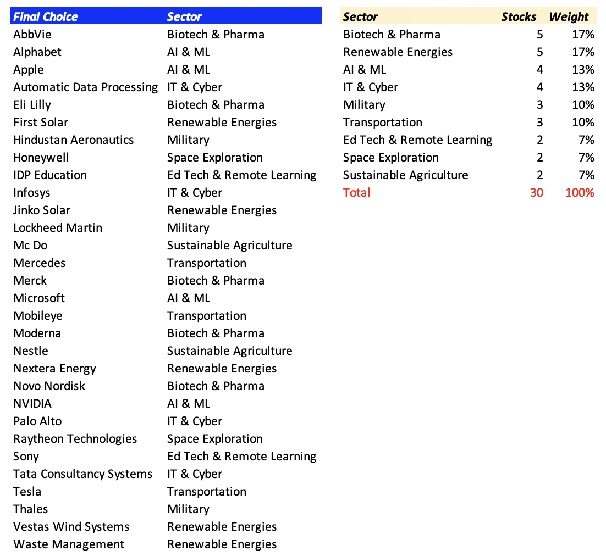
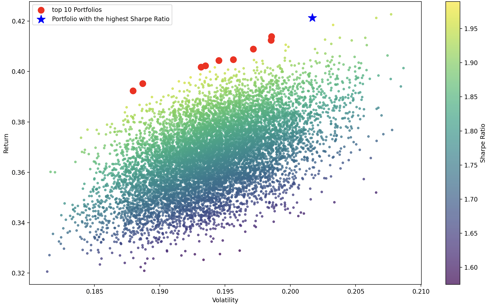
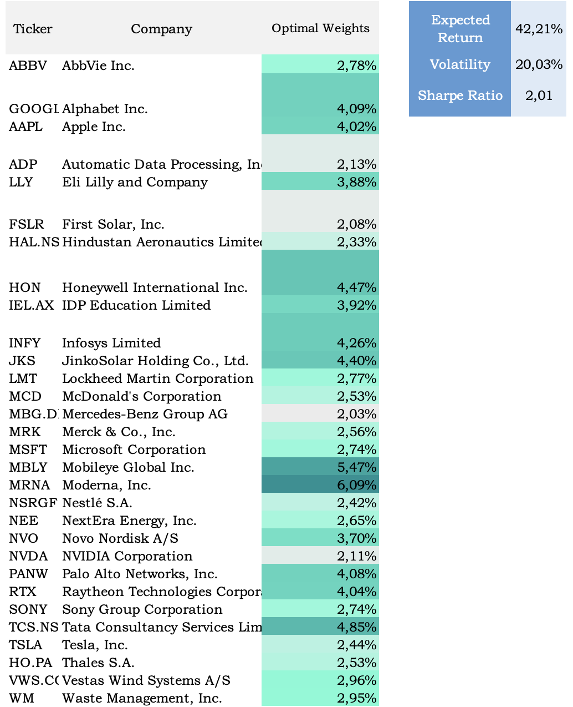

Top-Down Strategy
- Macroeconomics analysis: Despite the looming risks of a recession or a potential
global financial crisis, coupled with high inflation, elevated interest rates, and
rising unemployment, to that added the geopolitical tensions, I remain confident
in taking long positions in stocks as part of a
well-diversified investment strategy.
- Region exposure: 80% in U.S. and European stocks, 20% in the rest of the world.
- Industry exposure: In my article
Top Industries of Tomorrow, I identified 9 potentially interesting sectors. For
this reason, I will allocate 70% of my stocks to the top 5 reliable sectors (Renewable Energies, AI & ML,
Biotech & Pharma, Transportation, IT & Cybersecurity), 20% to promising but riskier
sectors (Space Exploration, Sustainable Agriculture, and Ed Tech & Remote Learning),
and the remaining 10% to the military industry.
- Stock-picking: At this stage, I will not perform fundamental or technical
analysis. I will choose stocks based on a single factor: their leading position
in the mentioned sectors - determined with Market Cap. I will select
50 stocks.
- Data collection: ten years of historical data (closing price) for the chosen stocks.
- Financial metrics calculation: Sharpe Ratio, Sortino Ratio, Beta, Volatility, Expected Return.
- Exclusion criteria: Narrowing down stock selection based on financial metrics.
- Diversified Portfolio Construction: Modern Portfolio Theory (MPT).
Stocks retained for the portfolio
Screenshot of my results after completing all steps 1-7
How do I implement Modern Portfolio Theory using Python?
- Download historical closing prices for the selected 30 stocks and calculate their daily returns.
- Generate 10,000 portfolios with random weights, and calculate their Expected Returns, Volatilities, and Sharpe Ratios.
- Plot the portfolios and highlight the top 10 portfolios with the highest Sharpe Ratio.
- Extract in an Excel file the weights of the top 10 Portfolios and chose one among them (depending risk-return preference).
# Define the tickers and date range
tickers = ['ABBV', 'GOOGL', 'AAPL', 'ADP', 'LLY', 'FSLR', 'HAL.NS', 'HON', 'IEL.AX', 'INFY', 'JKS', 'LMT', 'MCD', 'MBG.DE', 'MRK', 'MSFT', 'MBLY', 'MRNA', 'NSRGF', 'NEE', 'NVO', 'NVDA', 'PANW', 'RTX', 'SONY', 'TCS.NS', 'TSLA', 'HO.PA', 'VWS.CO', 'WM']
start_date = "2018-01-01"
end_date = date.today().strftime("%Y-%m-%d")
# Download the historical closing price
closing_prices = pd.DataFrame()
for ticker in tickers:
data = yf.download(ticker, start=start_date, end=end_date)
closing_prices[ticker] = data["Adj Close"]
# Calculate daily returns
daily_returns = closing_prices.pct_change()
# Function to calculate portfolio stats
def portfolio_stats(tickers, weights, daily_returns):
# Annualized return
annualized_returns = ((1 + daily_returns.mean()) ** 252) - 1
# Portfolio return
port_return = np.dot(weights, annualized_returns)
# Portfolio variance
cov_matrix = daily_returns.cov() * 252
port_variance = np.dot(weights.T, np.dot(cov_matrix, weights))
# Portfolio volatility (standard deviation)
port_volatility = np.sqrt(port_variance)
# Portfolio Sharpe ratio
risk_free_rate = 0.02
port_sharpe_ratio = (port_return - risk_free_rate) / port_volatility
return port_return, port_volatility, port_sharpe_ratio
# Generate 10000 random portfolios with different weights
num_portfolios = 10000
all_weights = []
port_returns, port_volatilities, port_sharpe_ratios = [], [], []
min_weight = 0.02
for _ in range(num_portfolios):
random_weights = np.random.random(len(tickers))
random_weights = min_weight + (1 - min_weight * len(tickers)) * random_weights / np.sum(random_weights)
all_weights.append(random_weights)
ret, vol, sharpe = portfolio_stats(tickers, random_weights, daily_returns)
port_returns.append(ret)
port_volatilities.append(vol)
port_sharpe_ratios.append(sharpe)
Efficient Frontier - Random Portfolios and top 10 Portfolios
Screenshot of 10,000 randomly generated portfolios visualized using Matplotlib in Python
# Find the indices of the top10 portfolios with the highest Sharpe ratios
top10_indices = np.argsort(port_sharpe_ratios)[-10:]
# Extract the corresponding weights, returns, volatilities, and Sharpe ratios
top10_weights = [all_weights[i] for i in top10_indices]
top10_returns = [port_returns[i] for i in top10_indices]
top10_volatilities = [port_volatilities[i] for i in top10_indices]
top10_sharpe_ratios = [port_sharpe_ratios[i] for i in top10_indices]
# Plot the random portfolios
plt.figure(figsize=(12, 8))
plt.scatter(port_volatilities, port_returns, c=port_sharpe_ratios, cmap='viridis', marker='o', s=10, alpha=0.7)
plt.colorbar(label='Sharpe Ratio')
plt.xlabel('Volatility')
plt.ylabel('Return')
# Plot the top10 portfolios (excluding the number one portfolio) + Highest sharpe ratio
plt.scatter(np.array(port_volatilities)[top10_indices[:-1]], np.array(port_returns)[top10_indices[:-1]], c='red', marker='o', s=100, alpha=1.0, label='top 10 Portfolios')
plt.scatter(port_volatilities[top10_indices[-1]], port_returns[top10_indices[-1]], c='blue', marker='*', s=200, alpha=1.0, label='Portfolio with the highest Sharpe Ratio')
# Add labels and legend
plt.title('Efficient Frontier - Random Portfolios and top 10 Portfolios')
plt.legend()
# Show the plot
plt.show()
Efficient Portfolio that I have chosen
Optimal Portfolio Weights
Bear in Mind the Limitations of MPT
- › Portfolio may need to be rebalanced frequently to maintain optimal allocation, which can be costly.
- › Since MPT is based on past performance, it may not accurately predict how assets will perform in the future, especially during periods of significant market changes or economic shifts.
- › MPT assumes that investors are rational and aim to maximize returns while minimizing risks. However, in reality, investor behavior is often influenced by emotions and biases.
A bet on Industry Leaders
By choosing not to perform fundamental or technical analysis, I am simply betting on the success of the top players in each promising industry. My choice is justified by the postulate that all the sectors I have chosen to invest in require significant competitive advantages, entry barriers, considerable technological advancements, revolutionary and ambitious projects (e.g., Tesla's electric semi-trucks, Microsoft's Copilot), and a strong commitment to reliability and data privacy ethics and policies (unfortunately, this last point is often the least respected).